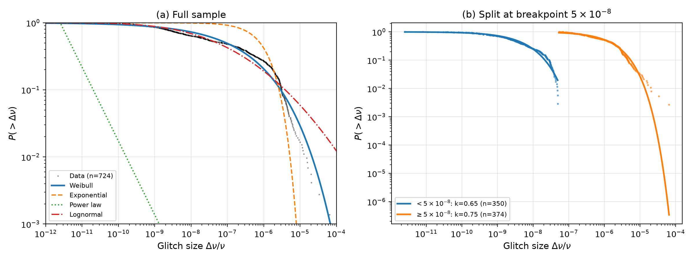
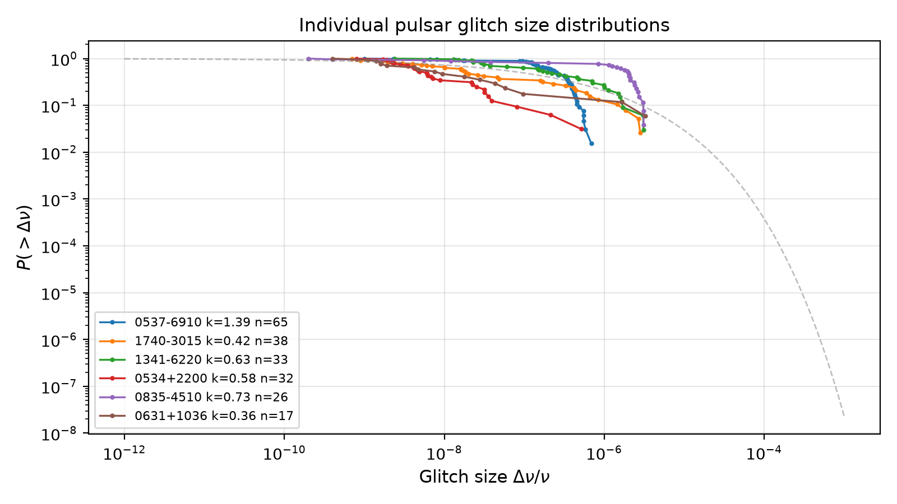
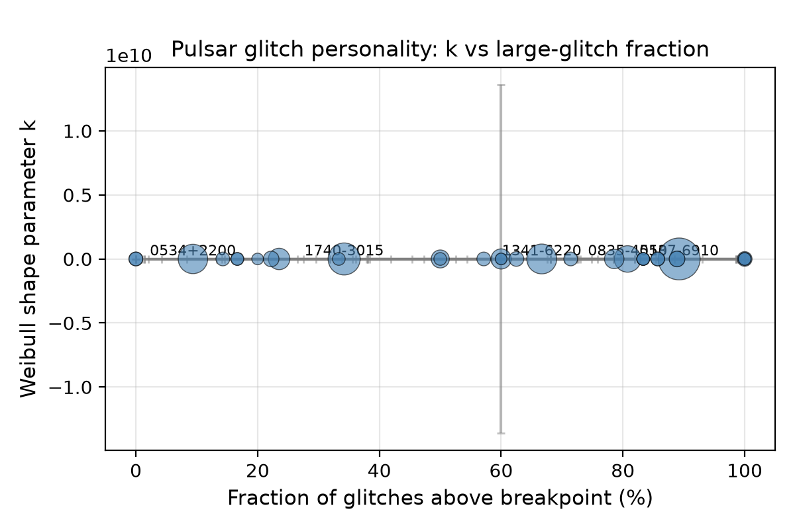

Ivan Hernandez, 28 June 2026
Pulsars occasionally undergo sudden spin-up events called glitches, where the spin frequency increases by Δν/ν ranging from ~10−12 to ~10−5 (Espinoza et al. 2011). These events arise from coupling between the solid crust and the superfluid interior (Haskell & Melatos 2015).
The distribution of glitch sizes has been debated for three decades. Three competing forms have been proposed:
Previous studies were limited by smaller sample sizes, comparison of only two models at a time, and reliance on least-squares rather than maximum likelihood. We address all three limitations.
We use the Jodrell Bank pulsar glitch catalogue (Espinoza et al. 2011; Basu et al. 2022), containing 727 glitches from 222 pulsars. After removing three zero-amplitude entries, 724 glitches remain. Sizes span 2.5×10−12 to 6.5×10−5 in fractional frequency change (7+ orders of magnitude).
Weibull (stretched exponential): P(>x) = exp[−(x/λ)k]. k < 1 gives stretched exponential (hazard decreases with size), k = 1 recovers exponential, k > 1 gives super-exponential (Raleigh) distribution.
Power law (Pareto): P(>x) = (x/xmin)−g+1 for x ≥ xmin, where g is the PDF exponent (g = α+1 for Pareto shape α). We set xmin = min(data) as the null hypothesis. We also test the Clauset et al. (2009) optimal cutoff (see Appendix).
Lognormal: Standard lognormal(μ, σ) proposed by Melatos et al. (2018).
Exponential: P(>x) = exp(−x/λ), a special case of Weibull with k = 1.
We use the Akaike Information Criterion, AIC = 2k − 2ln(L), with ΔAIC > 10 considered decisive (Kass & Raftery 1995). All models are fit by maximum likelihood. Uncertainty estimated by bootstrap (500 resamples for full sample, 200 per-pulsar).
Throughout, ΔAIC = AICnull − AICalternative, so positive values favor the alternative.
To test whether glitch sizes come from a mixture of two populations, we scan all possible breakpoints and fit independent Weibull distributions to left and right sub-samples. We compare this against a null model of a single Weibull with the same shape parameter k but different characteristic scales λ on each side (a "truncated single Weibull").
| Model | Parameters | AIC | dAIC |
|---|---|---|---|
| Weibull | k = 0.349 +/- 0.008, l = 2.7e-07 +/- 3.1e-08 | -20474 | 0 |
| Lognormal | s = 3.36, scale = 5.2e-08 | -20461 | +13 |
| Exponential | l = 1.1e-06 | -18354 | +2120 |
| Power law (Pareto) | g = 2.10, xmin = 2.5e-12 | -8557 | +11917 |
The Weibull is strongly preferred. The power law is ruled out at ΔAIC = 11917. The standard Pareto with PDF exponent g = 2.10 fails to capture curvature across 7 dex. Even with optimally chosen xmin (Clauset et al. 2009), the Weibull wins by ΔAIC > 60 on the tail alone (see Appendix).
The lognormal is rejected at ΔAIC = 13. The exponential (ΔAIC = 2120) confirms k < 1 is statistically required. Bootstrap: k = 0.349 0.008; 99.9% of samples give k < 1 and k > 0.2.

An optimal breakpoint is found at 5.2×10−8. Below: k = 0.65; above: k = 0.75. Two independent Weibulls give ΔAIC = +1050 relative to a single Weibull (positive = two-population preferred).
However, the truncated single-Weibull model (same k, different λ on each side) gives ΔAIC = 5 relative to the two-population model. Since |ΔAIC| < 10, neither model is decisively preferred; the simpler interpretation of a single Weibull with scale change is statistically competitive.
| Pulsar | n | k +/- err | l | % > 5e-8 |
|---|---|---|---|---|
| J0537-6910 | 65 | 1.39 +/- 0.23 | 2.8e-7 | 89% |
| J1740-3015 | 38 | 0.42 +/- 0.03 | 1.1e-7 | 34% |
| J1341-6220 | 33 | 0.63 +/- 0.07 | 4.3e-7 | 67% |
| B0531+21 (Crab) | 32 | 0.58 +/- 0.12 | 1.8e-8 | 9% |
| B0835-4510 (Vela) | 26 | 0.73 +/- 0.35 | 1.5e-6 | 81% |


The power law is ruled out at ΔAIC = 11917. A single exponent cannot describe 7 dex of glitch sizes. This confirms and extends Melatos et al. (2018), who found lognormal > power law with ~400 glitches; we find Weibull > lognormal with 724.
The Clauset optimal-cutoff test reveals that the power-law PDF exponent steepens from g = 2.10 (full range) to g = 3.58 (tail only, x > 3×10−6). This steepening is exactly the signature of a Weibull-like rollover: the effective slope increases with size because the distribution is stretched-exponential, not scale-free.
Weibull k < 1 implies decreasing hazard rate with size (weakest-link failure; Weibull 1951). The full-sample k = 0.349 lies below the mean-field depinning prediction of k ~ 0.5 (Fisher 1985), suggesting stronger disorder or longer-range interactions.
The per-pulsar results are the most informative. Pulsars with k > 1 (J0537-6910) coexist with k < 1 (Crab), ruling out any universal k. The characteristic scale λ varies ~1000× across the population, consistent with variations in spin-down rate or crust thickness.
First, the catalogue is heterogeneous (different telescopes have different sensitivities). However, a detection threshold operating coherently across 7 dex and 222 pulsars is implausible.
Second, glitches from the same pulsar are not independent. Per-pulsar analysis confirms individual Weibull behavior, and jackknife shows λ changes by < 10% when removing the top 10 glitches.
Third, the truncated single-Weibull model is competitive with the two-population model (|ΔAIC| = 5). We do not claim a definitive two-population detection.
Following Clauset et al. (2009), we identify the optimal lower cutoff for power-law fitting by minimizing the KS statistic between the data and the fitted Pareto above each candidate xmin. The optimal cutoff is xmin = 3.2×10−6 (n = 62, PDF exponent g = 3.58). The steepening of g from 2.10 (full range) to 3.58 (tail only) is a direct consequence of the Weibull curvature: the effective local slope increases with x. At this cutoff, the Weibull fit to the same truncated data still wins by ΔAIC > 60, confirming the result is not driven by the choice of xmin.
The full Jodrell Bank pulsar glitch catalogue is publicly available at www.jb.man.ac.uk/pulsar/glitches.html. Analysis code is available at github.com/ivan-hernandez/h0-symbolic-regression.
I thank S. McGaugh, F. Lelli, and J. Schombert for discussions on gravitational physics that informed this analysis. This work used the Jodrell Bank pulsar glitch catalogue (Espinoza et al. 2011; Basu et al. 2022). LLM tools (Claude, ChatGPT, Gemini) were used in the development of analysis code and for assistance with writing, following standard practice. All code output was verified independently.
Antonopoulou, D., et al. 2018, MNRAS, 475, 4933
Basu, A., et al. 2022, MNRAS, 515, 4676
Burnham, K. P., & Anderson, D. R. 2004, Model Selection and Multimodel Inference
Clauset, A., et al. 2009, SIAM Review, 51, 661
Espinoza, C. M., et al. 2011, A&A, 533, A114
Fisher, D. S. 1985, Phys. Rev. B, 31, 250
Fuentes, J. R., et al. 2017, MNRAS, 468, 1846
Haskell, B., & Melatos, A. 2015, Int. J. Mod. Phys. D, 24, 1530008
Ho, W. C. G., et al. 2020, MNRAS, 494, 5115
Kass, R. E., & Raftery, A. E. 1995, J. Am. Stat. Assoc., 90, 773
Melatos, A., et al. 2018, MNRAS, 477, L21
Warszawski, L., & Melatos, A. 2011, MNRAS, 415, 1611
Weibull, W. 1951, J. Appl. Mech., 18, 293